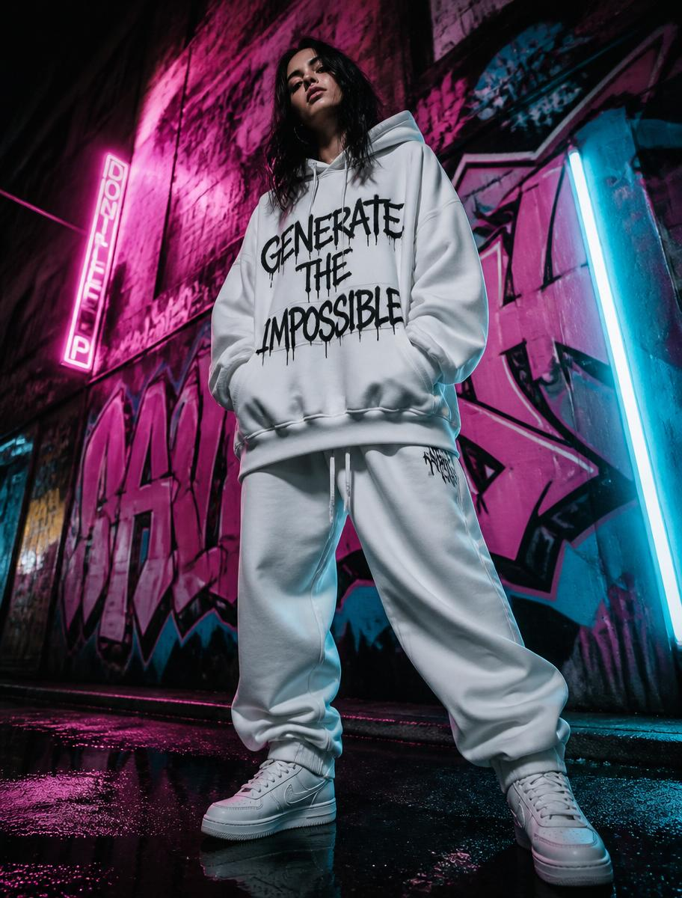
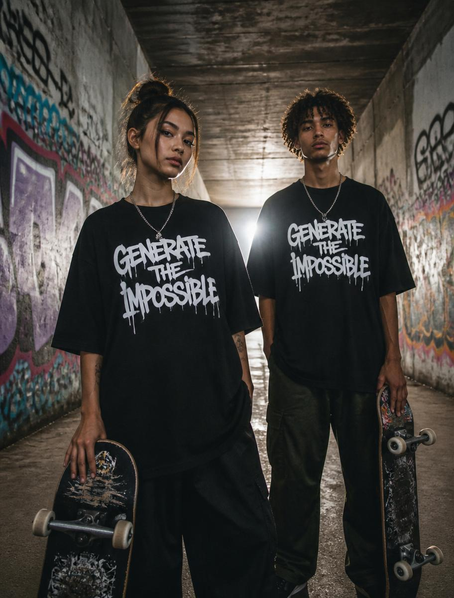

#001
01 // Drip Tee
heavy cotton · unisex
$88
Underground streetwear pulled from the alley walls. Heavy cotton, spray-paint prints, built for the ones who don't ask permission.
Shot in real alleys, on real people. Every piece is numbered, tagged, and drops once.


We walk the city at night. Alleys, tunnels, boarded-up lots. Best pieces come from where no one looks.
Every print is hand-cut and sprayed on raw cotton in our Berlin studio. No two are identical.
Every piece is stamped, numbered, and tagged with the alley it was born on.
Subscribers get the address 24h early. Drops go live at midnight and never restock.
Every stitch is a tag. Every drop is a wall. If it can be imagined at 3AM under a broken streetlight, it can be worn. Generate the impossible.
"Copped the hoodie at 12:01. Felt like winning the lottery. Fit is unreal.
"The only brand where the packaging looks like it was pulled out of a dumpster in the best way possible.
"I wore the tunnel tee to a gallery opening and three strangers asked where it was from. Told none of them.
Drop 02 lands when it lands. Subscribers get the address before the wall gets painted.